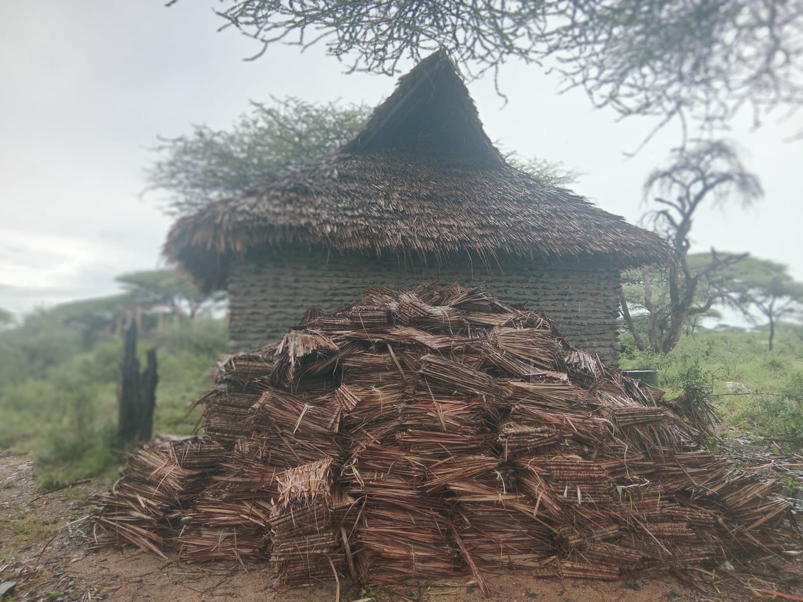
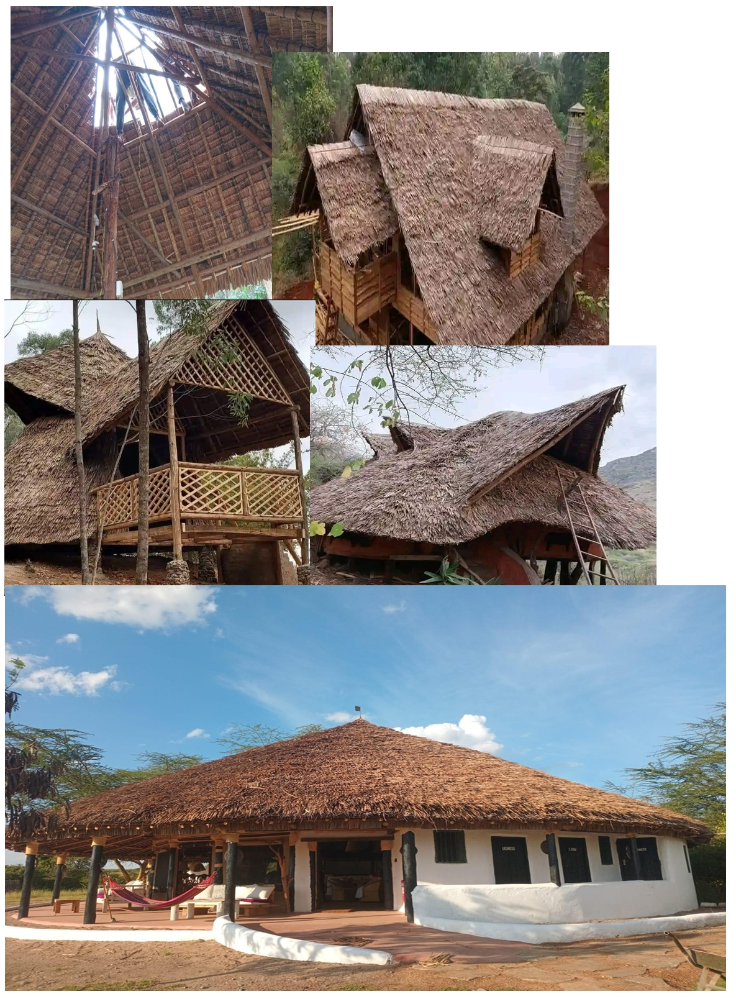
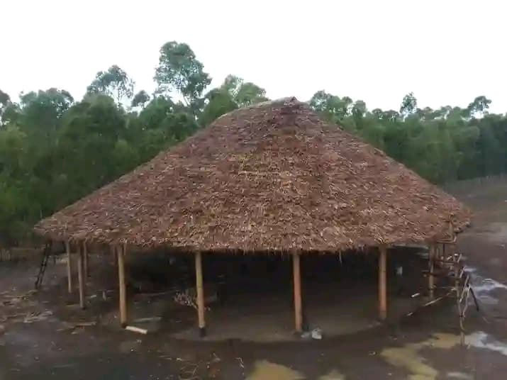

A Makuti roof is a traditional roofing style that uses thatching pieces made from dried coconut palm leaves ( Cocos nucifera ). These leaves are harvested when they turn brown and are then soaked in water to make them easier to fold. The individual pieces, often referred to as "tiles," are weaved together, primarily by women in local villages where coconut palms grow. The makuti are then tied to the roofing structure, overlapping to prevent water from dripping inside.
The frame of a Makuti roof can be constructed using various types of wood. Traditionally, mangrove wood was used, but due to concerns about illegal logging and its impact on coastal ecosystems, casuarina wood from plantations is often used as a more sustainable alternative. Other materials needed include nails, wire, and sisal strips for securing the makuti. The construction process involves removing the old roof, preparing the new frame, and then thatching the makuti onto the beams using sisal strips.
 Makuti roofing offers several advantages, particularly in coastal regions like
Kenya. It is considered eco-friendly because it uses a natural, renewable resource,
and harvesting the leaves doesn't harm the palm trees. The use of makuti
supports local communities by providing jobs for weavers and income for palm tree
owners. Makuti roofs are also relatively inexpensive, especially for smaller
roofs. A significant benefit is the cooling effect they provide, making
interiors more comfortable in hot climates. Makuti is also flexible, making
it suitable for various roof designs.
Eco-Friendly: It is a 100% natural, untreated building material, making it environmentally friendly .
Community Supportive: The preparation of makuti provides jobs for weavers and income for palm tree owners, supporting local communities.
Affordable: Makuti roofing can be economical, especially for smaller roofs .
Lightweight: The lightweight nature of makuti allows it to be used on structures that might not support heavier roofing materials.
Cooling Effect: Makuti roofs provide a cooling effect, making the area underneath more comfortable, even in hot climates .
Flexibility: Makuti is flexible and can be adapted to various roof designs
One of the interesting things about design is the combination of traditional and contemporary aspects. I am sure you have come across hotels, restaurants and serviced apartments, like the Kings Post, with a makuti fling to add in a mix of nature and luxury. Martin shares with you the Makuti story, a popular coastal element.
Makuti is thatch material made from dried coconut palm leaves. Thatching is a technique where layers of
dried vegetation are lined up in such a way, so as to shelter an interior from being soaked in
rainfall. Implication here is that, several layers of dried makuti have to be stacked one over
another, until a sufficient thickness is attained, about 1 foot is suitable to make the roof
impervious to water, and also provide insulation from the elements of weather.
Thatched roofing is not exclusive to our tropical climate, but has also been used in temperate regions for
millenia. Only difference is that, in temperate Countries, Houses with thatched roofing are an exclusive feature
for wealthy individuals, who find it ecologically friendly. In Countries in the tropical Regions, thatched
roofing is used in numerous ethnic groups’ housing style. Even so, Hotel owners use thatched makuti roofing
as a signature look for their unique structures, especially in the East African Coast.
Makuti roofing is made from individual weaved palm fronds. Women in local villages at the Coastal area usually
do the weaving by hand. The palm fronds are harvested from Coconut trees, without any interference to the growth
of the tree. The dried up fronds, are the ones that are specifically targeted during harvesting.
Eco-friendly Makuti is absolutely natural material as such it does no harm to the environment, whether on a
rooftop or even when disposed off once old and derelict.
Supports local community enterprises Makuti as a raw material, is best sourced as weaved palm fronds from
local Women weavers.
Economical when covering small roof areas, makuti is very affordable. The cost per square metre only
increases significantly when used to cover large roof areas.
It provides for a cool interior When living in humid tropical regions, on gets to appreciate having
makuti roofing, since it does not retain heat and additionally provides a cool living environment.
Typical of tropical housing design since it creates that ambiance expected of a Coastal residence.
Temporary this aspect allows a builder to receive a permit much more easily, than if a permanent roofing
material was opted for.
Flexible across a wide range of roof designs other roofing material is limited to a few housing designs,
however, makuti is adaptable to very many varieties of house designs.
Quick to put up it is the fastest kind of roofing material that one can install.